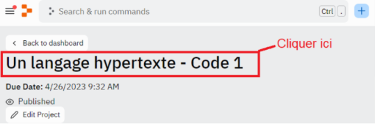

Durée : 1 h 30
Prérequis : avoir étudié le cours jusqu’ici
Environnement de travail : Replit
Vous connaissez la théorie sur JavaScript, un des langages de programmation côté client le plus populaire au monde. Vous savez aussi déclarer et définir des variables. Mais un point fondamental qui va maintenant nous intéresser est celui des opérateurs. Les opérateurs sont des symboles qui vont nous permettre d’analyser et de manipuler des données de différents types.
Il existe plusieurs types d’opérateurs parmi lesquels les opérateurs arithmétiques, les opérateurs d’affectation, les opérateurs de comparaison, et les opérateurs de logique. Ces différents opérateurs ont des rôles spécifiques, qui vous permettront de modifier et d’analyser les données.
L’objectif est de découvrir les différents opérateurs fondamentaux en JavaScript. Dans un premier temps, nous parlerons des opérateurs arithmétiques et d’affectation. Dans la seconde partie, nous nous intéresserons aux opérateurs de comparaison et de logique. Plusieurs exercices vous permettront d’apprendre à utiliser les opérateurs en JavaScript. Un dernier conseil, n’hésitez pas à consulter, dès que nécessaire, la documentation disponible sur le site mdn (mozilla web docs).
Pour avoir accès au code et à l'IDE intégré de cette leçon, vous devez :1) Vous connecter à votre compte sur https://replit.com/ (ou créer gratuitement votre compte)2) Rejoindre la Team Code Studi du module via ce lien : https://replit.com/teams/join/kffyqqqiagcezrjugixbetjackpqhpgo-javascript-studi
Une fois ces étapes effectuées, nous vous conseillons de rafraîchir votre navigateur si le code ne s'affiche pas.En cas de problème, redémarrez votre navigateur et vérifiez que vous avez bien accepté les cookies de connexion nécessaires avant de recommencer la procédure.
Pour accéder au code dans votre cours, cliquez sur le nom du lien Replit dans la fenêtre. Par exemple :
